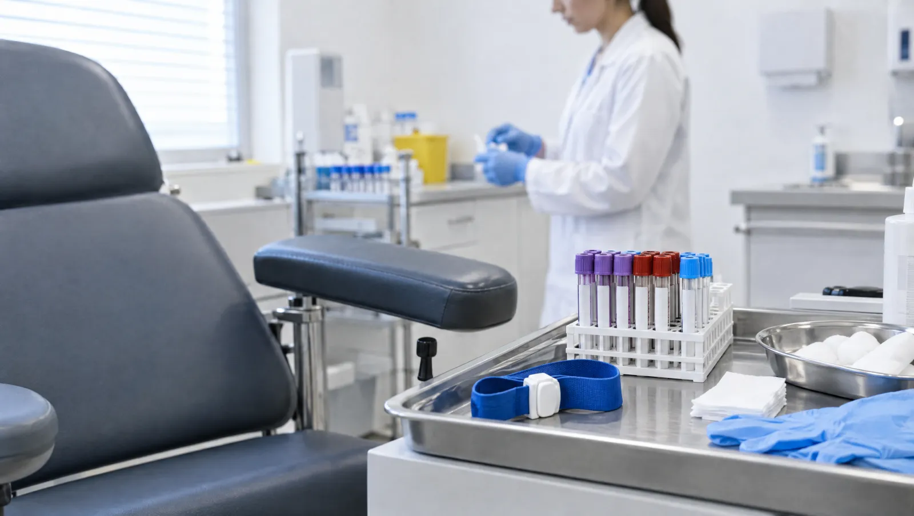

Bir tüp kandan sonuca giden yol
Laboratuvar, hekiminizin istediği tahliller için kan, idrar ve dışkı örneğinizin alındığı ve analize hazırlandığı birimdir. Kan genellikle kolun iç yüzündeki toplardamardan, ince bir iğneyle alınır. İşlem bir iki dakika sürer. Bazı testler için aç gelmeniz gerekir. Sonuçlar hazır olduğunda e-Nabız'a aktarılır, yorumunu da hekiminiz yapar.
Açlık, son yemekten sonra yalnız su içerek geçen süredir. Şeker ve kolesterol gibi testlerde bu süre genellikle 8-12 saattir. Kahvaltı, çay, şekerli içecek, sakız ve sigara açlığı bozar. Sade su içmek ise serbesttir; damarların belirginleşmesine de yardım eder. Çok uzun açlık bazı değerleri değiştirebilir. Düzenli kullandığınız ilaçları tahlilden önce alıp almayacağınızı hekiminize sorun.
Bazı testlerin sonucu günün saatine göre değişir. Örneğin kortizol hormonu sabah erken saatlerde ölçülür. Demir düzeyi de gün içinde iner çıkar. Kandaki ilaç düzeyi ölçülecekse örnek, bir sonraki dozdan hemen önce alınır. Bu yüzden kan verme saatinizi teste göre planlamak, sonucun daha doğru yorumlanmasını sağlar.

Laboratuvara hangi durumlarda yolunuz düşer?
- Poliklinik muayenesinde hekiminizin tahlil istemesi
- Şeker, tiroid, böbrek ya da karaciğer hastalığının düzenli takibi
- Gebelik takibinde istenen kan ve idrar testleri
- Ameliyat öncesi kan grubu, pıhtılaşma ve kan sayımı
- İdrar yanması ya da sık idrara çıkmada idrar tahlili
- İshal ya da dışkıda kan şikâyetinde dışkı incelemesi
- Kullandığınız bir ilaç nedeniyle düzenli kontrol tahlilleri
Sık istenen test grupları
- Tam kan sayımı (hemogram)
- Açlık şekeri ve HbA1c
- Kolesterol ve trigliserit
- Böbrek fonksiyon testleri (üre, kreatinin)
- Karaciğer enzimleri
- Tiroid hormonları
- Demir, B12 ve D vitamini
- Pıhtılaşma testleri
- Tam idrar tahlili ve idrar kültürü
- Dışkıda gizli kan ve parazit incelemesi
- Kan grubu
- İltihap belirteçleri (CRP, sedimantasyon)
Örnek verme adımları
Kan alma
Koldaki toplardamardan ince bir iğneyle tüplere kan alınır. Kolunuzu saran lastik bant işlem bitmeden çözülür.
- Süre
- 1-3 dakika
- Hazırlık
- Teste göre 8-12 saat açlık; su içebilirsiniz
Şeker yükleme testi
Aç karnına kan alındıktan sonra şekerli bir sıvı içersiniz. Belirli aralıklarla tekrar kan alınarak vücudun şekeri nasıl işlediği ölçülür.
- Süre
- 2-3 saat
- Hazırlık
- 8-12 saat açlık; test boyunca yemek yemeyin, sigara içmeyin, oturarak bekleyin
İdrar tahlili
Orta akım idrarı steril bir kaba alınır. Enfeksiyon, şeker, protein ve kan bulguları araştırılır.
- Süre
- Örnek verme birkaç dakika
- Hazırlık
- Mümkünse sabahın ilk idrarı; önce genital bölgeyi suyla temizleyin
Dışkı incelemesi
Temiz bir kaba alınan küçük bir dışkı örneğinde gizli kan, parazit ya da mikrop aranır.
- Hazırlık
- Kabı laboratuvardan alın, örneği bekletmeden 1-2 saat içinde teslim edin
24 saatlik idrar
Bir gün boyunca yapılan idrarın tamamı özel bir kapta toplanır. Böbrek fonksiyonu ve protein kaybı bu yolla ölçülür.
- Süre
- 24 saat
- Hazırlık
- İlk sabah idrarını tuvalete yapın, sonraki her idrarı kaba ekleyin
Kan vermeye gelmeden önce
- Tahlil isteminde açlık gerekip gerekmediğini öğrenin
- Önceki akşam ağır, yağlı yemek ve alkolden uzak durun
- Kolunuzu kolayca sıvayabileceğiniz giysiler giyin
- Kan alırken bayılma öykünüz varsa görevliye önceden söyleyin
- Kan sulandırıcı kullanıyorsanız belirtin; iğne yerine daha uzun süre bastırmanız gerekir
Laboratuvar hekimleri

Tahlil öncesi ve sonrası sık sorulanlar
Aç gelmem gerekirken su içebilir miyim?
Evet, sade su açlığı bozmaz. Yeterli su içmek damarları belirginleştirir ve kan almayı kolaylaştırır. Çay, kahve ve şekerli ya da aromalı içecekler ise açlığı bozar. Sabah çayınızı kan verdikten sonra için.
Kan aldırdıktan sonra kolumda morluk oluştu, ne yapmalıyım?
İğne yerinde küçük bir morluk sık görülür ve birkaç günde kendiliğinden geçer. Kan alındıktan sonra pamuğu, kolunuzu bükmeden birkaç dakika düz bastırmak morluğu azaltır. O gün o kolla ağır yük taşımamaya çalışın. Morluk büyüyorsa ya da kolda şişlik, kızarıklık veya ateş varsa hekiminize başvurun.
İdrar örneğini nasıl doğru veririm?
Önce ellerinizi yıkayın ve genital bölgeyi suyla temizleyin. İdrarın ilk kısmını tuvalete yapın. Akış sürerken kabı doldurun, son kısmı yine tuvalete bırakın. Buna orta akım idrarı denir. Bu yöntem, dış ortamdan bulaşan mikropların sonucu yanıltmasını önler. Kabın iç yüzüne ve kapağın içine dokunmayın. Adet dönemindeyseniz görevliye bilgi verin; çünkü kan, sonucu etkileyebilir.
Tahlil sonucum e-Nabız'da neden hâlâ görünmüyor?
Sonuçlar ancak onaylandıktan sonra e-Nabız'a aktarılır. Hemogram gibi rutin testler kısa sürede çıkar. Kültür gibi mikrobun üremesini bekleyen testler ise birkaç gün sürer. Bazı özel testlerin süresi daha uzundur. Beklenen süreyi örnek verirken laboratuvar görevlisine sorabilirsiniz.
Sonucum referans aralığının biraz dışında, endişelenmeli miyim?
Referans aralığı sağlıklı kişilerin büyük çoğunluğunu kapsar ama hepsini değil. Bu yüzden sınıra yakın küçük sapmalar sık görülür. Bir değerin anlamı; belirtilerinize, diğer sonuçlarınıza ve eski değerlerinize birlikte bakılarak anlaşılır. Sonucu hekiminize gösterin, gerekirse test tekrarlanır.
Bu sayfayı Uzm. Dr. Taner Ünal gözden geçirdi. Son güncelleme: 7 Ekim 2026.